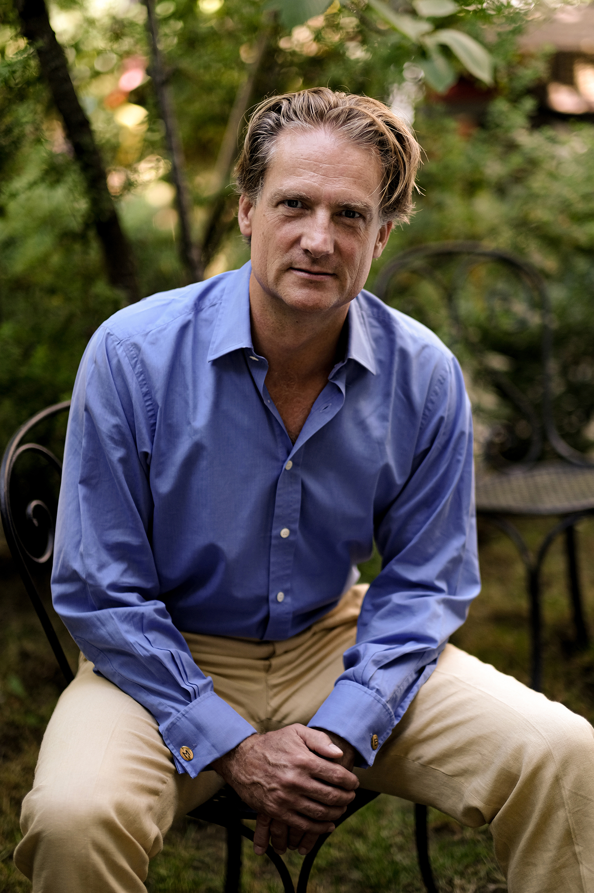
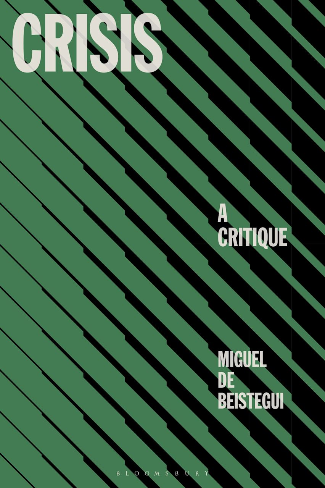

Philosopher
Welcome to my website, where you will find detailed information about my academic career, publications, projects, media contributions, and forthcoming events.

© Bénédicte Roscot
LATEST BOOK

Drawing on examples from economics, social movements, pandemics, genocides, ecological devastation, and discourses from law to political economy and eco-criticism, this work engages with authors who have questioned the connection between crisis and critique. It aims to recalibrate our language and thought for an age of seemingly unrelenting catastrophe.
More about this bookRECENT EVENTS
A conversation with Michel Houellebecq, Festival de las Ideas, Madrid, 21 September 2025.
Watch video
“Philosophy in Times of Crisis” (in Spanish). Annual Lecture of the Barcelona Network for Political and Social Theory, followed by a conversation with Marina Garcés. CCCB, Barcelona, 26 January 2026.
Watch lecture
“Crisis: A Contested Concept” (in Spanish). A panel discussion on Crisis: A Critique, with Professors Laura Llevadot, Peter Wagner, Gavin Rae, and Camil Ungureanu. CCCB, Barcelona, 27 January 2026.
Watch discussion